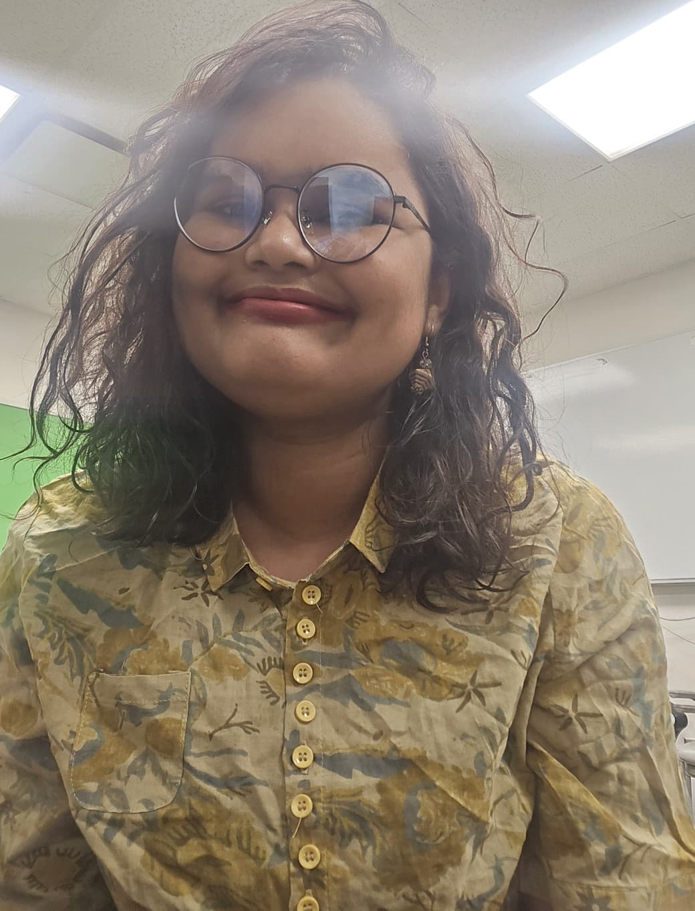

About
Background & Education
I am currently a Graduate Research Assistant at the Reliable and Intelligent Mobile Networks (RIM) Lab, University of Toledo, where I work under the supervision of Dr. Samia Tasnim. Before starting my PhD, I spent several years as a software engineer across startups and social enterprises in Bangladesh, building web applications, dashboards, and data pipelines.
My research interests span the Internet of Things, Human–Computer Interaction, Data Science, Machine Learning, and Deep Learning, with a particular focus on Human–AI Interaction and Social Computing. I completed my B.Sc. in Computer Science & Engineering at the Bangladesh University of Engineering and Technology (BUET).
Alongside research, I serve as General Secretary and Event Coordinator for the ACM Women's Chapter at Toledo EECS, and I am a member of BWCSE (Bangladeshi Women in Computer Science and Engineering).

Education
PhD Student, EECS, The University of Toledo
2nd year PhD student, College of Engineering. Supervisor: Dr. Samia Tasnim. CGPA: 3.799 / 4.00.
B.Sc. in Computer Science & Engineering, BUET
Bangladesh University of Engineering and Technology. CGPA: 2.97 / 4.00.
Skills
Languages
JavaScript, HTML, CSS, C, C++, Java, Python, R, PL/SQL, Lex-Yacc, 80x86 Assembly
Libraries & Frameworks
React JS, React Native, Pandas, NumPy, spaCy, scikit-learn, TensorFlow, Beautiful Soup, FastAPI, Bootstrap, Flask, Django, LangChain, LlamaIndex
Data & Visualization
Seaborn, Matplotlib, Tableau, HighCharts, Generative AI, Docker
Databases
Oracle, MySQL, SQLite, DynamoDB, PostgreSQL, Neo4j, MongoDB
Embedded & Graphics
AVR Microcontroller, Arduino, iGraphics, OpenGL, JavaFX, NS-2
Tools
Git, Bitbucket, VS Code, PyCharm, IntelliJ, Android Studio, Expo, Trello, LaTeX
Volunteer Activities
- General Secretary & Event Coordinator, ACM Women's Chapter, The University of Toledo EECS
- Member, BWCSE (Bangladeshi Women in Computer Science and Engineering)